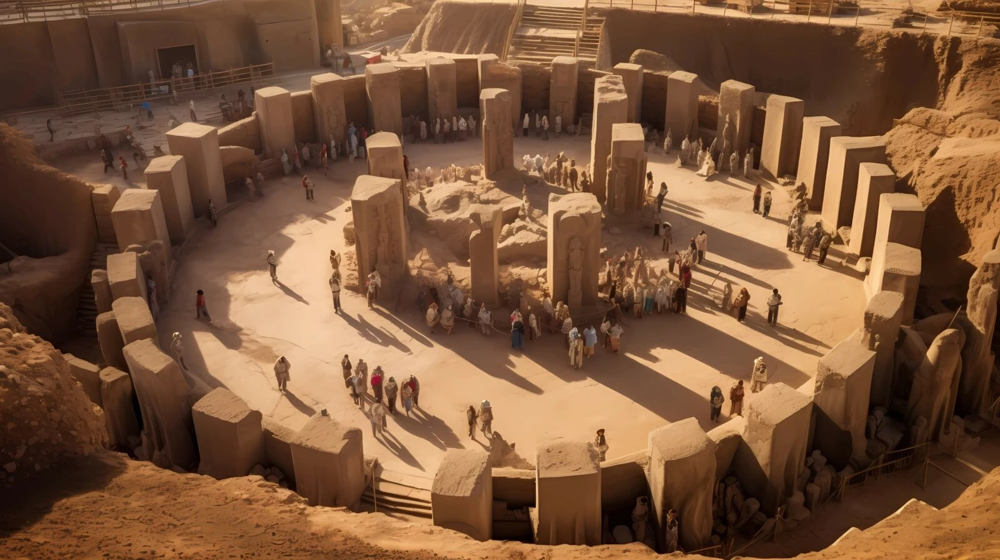
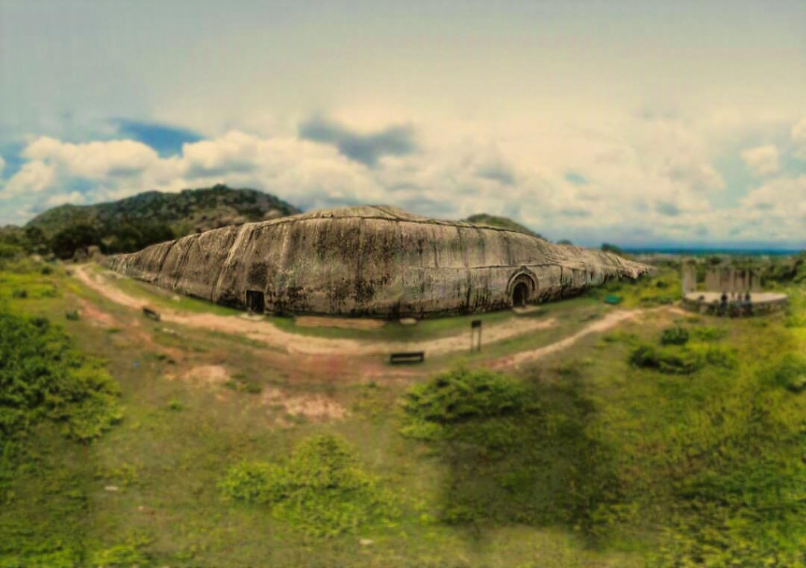
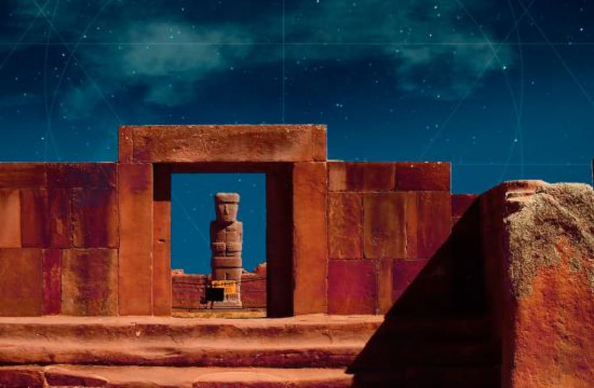
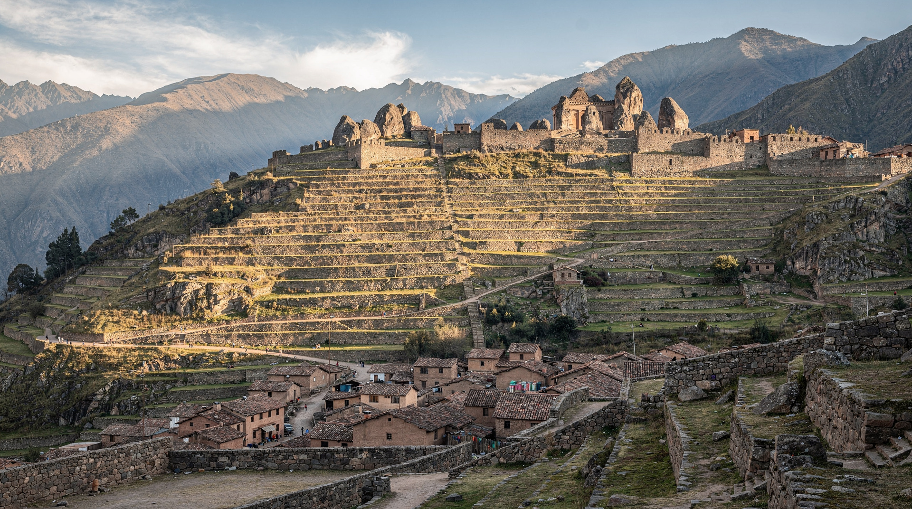
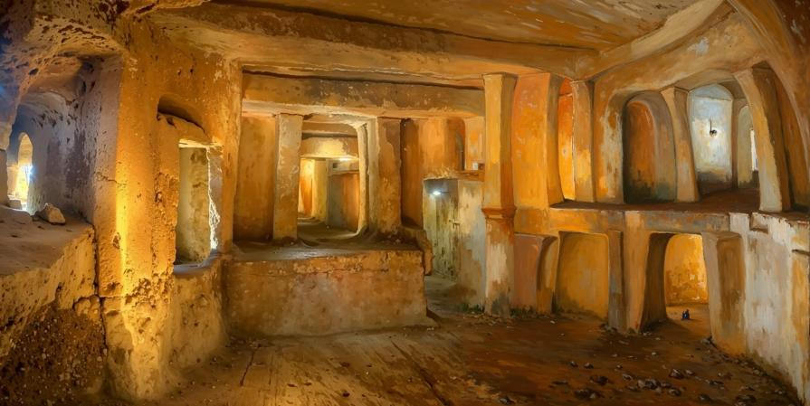
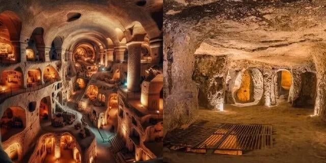
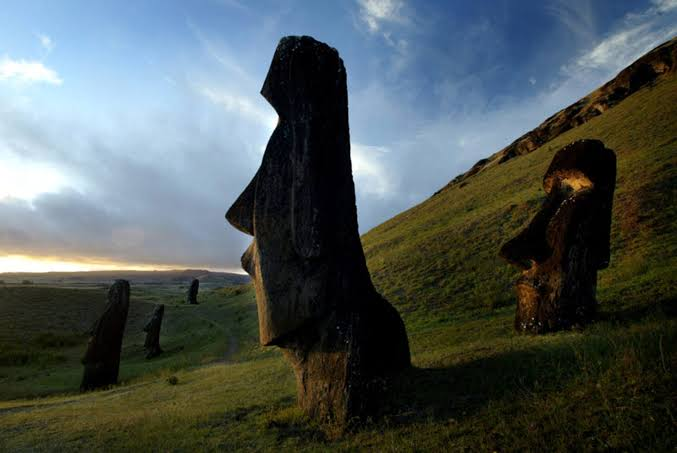

Megaliths, Acoustic Anomalies & Cosmic Cycles
A civilization rising from the ashes of a future cataclysm will not know that the internet ever existed. Just as languages vanish over centuries, our concrete structures will not survive the coming millennia. Yet, an indelible language from past civilizations has been left for us to translate – cosmology and mathematics.
Ancient megastructures are not primitive monuments, but evidence of peak engineering and cosmology. They incorporate universal constants (π, Φ), telluric energy frequencies, and precise markers created before global cataclysms to preserve the core matrix of civilization.
Electromagnetic Spectrum and Energy Equation (E = hf)
According to quantum physics fundamentals, energy is directly proportional to frequency (E = hf). Low frequencies and acoustic standing waves penetrate and resonate effortlessly through dense materials (granite, earth, bedrock), whereas higher frequencies are absorbed. Ancient engineers utilized this principle in megalithic chambers to establish stable energy and consciousness fields.
Low Frequency Penetration
Low frequencies and long waves bypass or pass straight through massive physical barriers, enabling communication and energy transmission across the global megalithic network.
Acoustic Resonance (110 Hz)
In chambers such as the Great Pyramid of Giza and the Malta Hypogeum, granite and limestone structures amplify 110 Hz standing waves, directly altering human neurological states.
Epoch I: Antediluvian Peak & Pre-Younger Dryas (> 12,800 BP)
Global Megalithic NetworkGöbekli Tepe (Turkey)
37.2231° N, 38.9223° EMonumental T-shaped monolith complex intentionally buried and sealed ~11,600 years ago in response to a global cataclysm. It demonstrates deep understanding of astronomical cycles and geometry millennia before the official "agricultural revolution". Synchronized with Sirius and Orion constellations, it served as a primary antediluvian cosmological center.

Gunung Padang Pyramid (Indonesia)
6.9926° S, 107.0563° EMulti-layered pyramidal structure with deeper layers dating back to the Younger Dryas cataclysm period (over 14,000 – 25,000 BP). Hidden chambers and basalt column structures revealed via ground-penetrating radar confirm the hill is actually a gigantic engineering-planned megalithic construction built during a civilization peak.

Epoch II: Post-Cataclysm Regeneration & Golden Ratio (~6,000 – 3,000 BP)
Mathematical Peak & AcousticsGreat Pyramid of Giza (Egypt)
29.9792° N, 31.1342° EThe most precise geodetic structure on Earth. Its base proportions encode universal constants π and Φ (golden ratio), perfectly aligned to magnetic and geographic north. The King's Chamber exhibits stable 110–121 Hz standing wave resonance, acting as an energy and consciousness resonator.

Barabar Granite Caves (India)
25.0060° N, 85.0690° EChambers hollowed out of solid granite mass with so-called "Mauryan polish" – micron-level smoothness unreplicable with iron age tools. These chambers possess extreme acoustic resonance capable of inducing deep psychoacoustic effects on consciousness through the piezoelectric granite composition.

Tiwanaku & Pumapunku (Bolivia)
16.5585° S, 68.6688° WGigantic andesite and diorite blocks distributed across the Andean high plateau, fitted with complex H-shaped locks, precise internal boreholes, and micron-level channels. These blocks are interlocked using metal clamps, pointing to industrial-scale megalithic technology predating the Inca civilization.

Ollantaytambo & Sacsayhuamán (Peru)
13.2574° S, 72.2627° WFortress of the Sacred Valley, whose upper Sun Temple features several 50+ ton pink granite slabs transported across a rushing river and high mountain ridges from an opposite quarry. The polygonal fitting between massive stones is so tight a razor blade cannot pass through, perfectly withstanding earthquakes.

Epoch III: Classical Succession & Synchronous Structures
Global Terrestrial NetworksĦal Saflieni Hypogeum (Malta)
35.8696° N, 14.5069° EOlder than the Egyptian pyramids. The Ħal Saflieni Hypogeum is a three-level subterranean acoustic sanctuary where a male voice spoken in the "Oracle Room" resonates through the entire temple while higher frequencies are entirely filtered out. This structure is directly synchronized with the resonance bands of the Giza and Malta megalith network.

Angkor Wat (Cambodia)
13.4125° N, 103.8670° EMassive temple complex whose layout on the ground mirrors the exact constellation Draco at a specific celestial epoch. Blocks are connected without mortar using tight grooves and tenons.
Kailash Monolithic Temple / Ellora (India)
20.0258° N, 75.1780° EMonumental monolithic temple carved out of a single continuous rock face **from top to bottom**. Builders had to excavate hundreds of thousands of tons of basalt stone without allowing a single error.

Derinkuyu Underground City (Turkey)
38.3768° N, 34.7345° EMulti-level subterranean megastructure extending dozens of meters underground capable of sheltering tens of thousands of people complete with ventilation shafts and rolling stone doors.

Easter Island (Rapa Nui)
27.1127° S, 109.3497° WMoai statues positioned along the planetary Great Circle line connecting Giza, Nazca, and Angkor with mathematical precision, stabilizing the Earth's geomagnetic field.

Global Megalithic & Subterranean Network
Interactive 3D Matrix mapping telluric lines and color-coded technology nodes.
Navigation Controls:
• Click & Drag: Rotate sphere
• Mouse Wheel / Touch: Zoom in / out
• Node Marker: Open research dossier
Site Name
Coords
Builder Engineering & Physics:
Engineering details...
Impact on Consciousness & Metaphysics (Frequencies & Telepathy):
Metaphysical details...